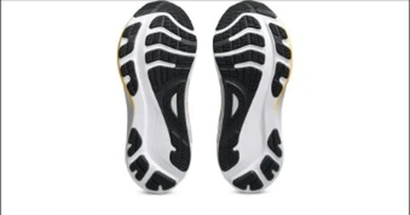
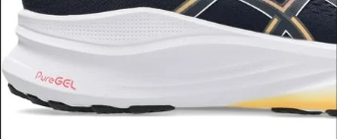

DAILY｜安定型デイリー
安定性とグリップ、どちらも5点。
安定性5.0、グリップ5.0。摩擦係数1.04は、計測のある106足の中で一番高い。かかとの幅は97.2mm、ヒール剛性は5。足元のぶれを抑える数字が揃っている。デイリー部門67足中14位、コスパ点は4.0。
着地で足が内側に倒れやすい人。濡れた路面も走る人。ゆっくり長く走る日が多い人。
ペースを上げる練習にも使いたい人。軽い靴が好きな人。


摩擦係数1.04は、2位のGEL-NIMBUS 27（0.84）を大きく引き離す。比較相手のGHOST 18は0.54、GT-2000 13は0.47。雨の日でも足元を気にせず走れる。
かかとの幅は97.2mmで、ヒール剛性は5段階で5。着地でかかとがぶれにくい作りである。
摩耗深度は0.7mmで、推定寿命は約700km。1kmあたり約31円。
5点満点。計測値を当サイトのルールで点数にしたもの。
安定性5.0、グリップ5.0、耐久性4.5と、守りの項目が高い。一方で軽さ2.0、スピード1.5は低い。デイリー部門はクッションと安定性を重く見るので、そこで点を取った。
高いほど滑りにくい。
高いほど反発する。
| KAYANO 32 | GHOST 18 | GT-2000 13 | |
|---|---|---|---|
| 価格 | ¥22,000 | ¥19,800 | ¥15,950 |
| 実測重量 | 295g | 290g | 264g |
| 衝撃吸収（SA） | 133 | 135 | 119 |
| エネルギーリターン前足部 | 49.3% | 58.1% | 50.5% |
| 摩擦係数 | 1.04 | 0.54 | 0.47 |
| 摩耗深度 | 0.7mm | 0.8mm | 0.4mm |
| 性能点 | 3.95 | 4.11 | 3.69 |
| コスパ点 | 4 | 4.5 | 4.5 |
GHOST 18は¥2,200安く、性能点も4.11と高い。反発も58.1%と上。GT-2000 13は¥15,950で、同じASICSの安定型として価格を抑えたい人向け。KAYANO 32はグリップで2足を大きく上回る。
弱点は反発と重さである。前足部のエネルギーリターンは49.3%で、107足の中で低いほうから6番目。実測295gも重い。速く走るための靴ではなく、ゆっくり安定して走るための靴である。
重さと反発の低さは、走り出すとすぐ分かる。試着では歩くだけでなく、少し走ってみたい。
週末の長いジョグや、疲れが残っている日の靴に向く。朝や夜の暗い道、雨上がりの道を走ることが多い人には、グリップの高さが安心材料になる。
滑らず、ぶれない。速さは求めず、安定して長く走りたい人のための1足である。
※本記事は海外ラボ（RunRepeat）の計測データとメーカー公表値、当サイトの計算をもとにした分析です。計測はUS9（約27cm）です。1kmあたりの費用は摩耗深度から推定した寿命での概算です。価格は当サイトの掲載値で、変更されている場合があります。